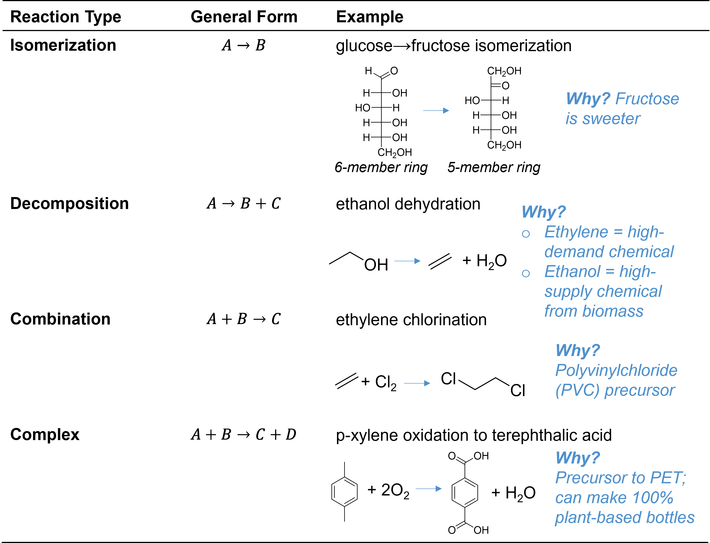
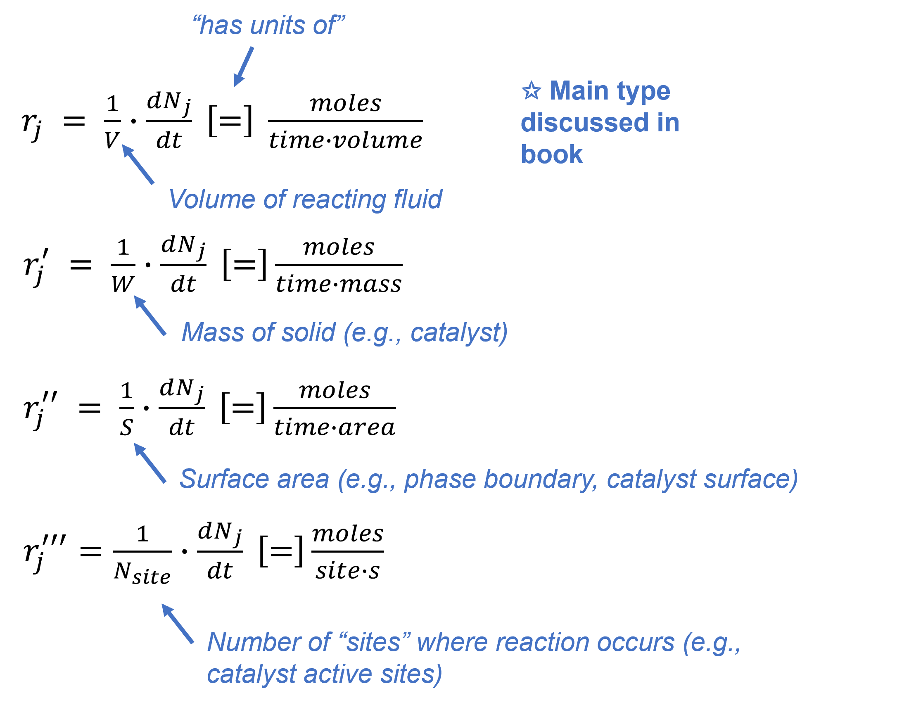

Chapter 2
Contents
Chapter 2¶
Reactor types and design equations¶
Topics:¶
2.1. Basic reaction types and stoichiometry
2.2. Reaction stoichiometry
2.3. Reactor design equations
2.4. Reactor types: batch, CSTR, PFR, PBR, FBR
2.5. Conversion and reactor sizing basics
2.1. Basic concepts of chemical reactions¶
A chemical reaction is the change of one or more of the following properties of one or more chemical entities:
Types of atoms
Numbers of atoms
Structure
Configuration
We refer to the chemical entities we are starting with as the reactants and those which we are forming as the products. We use an arrow to separate these with the reactants on the left and products on the right. This arrow can point forward (\(\rightarrow\)), backward (\(\leftarrow\)), or both ways (\(\leftrightarrow\), \(\rightleftarrows\), or \(\rightleftharpoons\)). A “\(\rightarrow\)” is often used generically and implies nothing further about the reaction than the identies of the reactants and the products. It can also be used to imply that the reaction is irreversible and only runs in the forward direction. Similarly, “\(\leftarrow\)” may imply that the reaction is irreversible and only runs in the reverse direction. Two-directional arrows imply that the reaction is reversible and can operate in either direction. Reversibility will be discussed in further detail in Chapter 4.
It should be noted that the specification as an entity as a “reactant” or “product” is more related to the situation than the reaction. By writing a reaction as \(A\rightleftarrows B\), for example, we are implying that we are going to have \(A\) to start with and form \(B\) as the reaction progresses. If we had started with \(B\), however, we might have written the same reaction as \(B\rightleftarrows A\). In the former case \(A\) is the reactant while in the latter case \(B\) is the reactant. When we look at a reaction equation, however, we will assume it matches the situation at hand and refer to the entities on the left as reactants and those on the right as products.
We can consider four general classes of reactions which can result in these. They include:
Isomerization: \( A\rightleftarrows B \)
Decomposition: \( A\rightleftarrows B + C\)
Combination: \( A + B \rightleftarrows C\)
Complex: \( A + B \rightleftarrows C + D\)
Isomerization involves a single reactant and a single product. Some examples include double bond isomerization, skeletal isomerization, ring opening/closing, and stereoisomerization. One specific example is the isomerization of glucose (a sugar with a six-membered ring) to fructose (a sugar with a five-membered ring). This is performed because fructose tastes sweeter. High-fructose corn syrup is therefore a mixture of sugars high in fructose which is therefore particularly sweet.
Decomposition involves the conversion of one molecule into two or more smaller ones. Some examples include dehydration, dehydrogenation, decarbonylation, and decarboxylation. Two particularly interesting reactions are short alkane dehydrogenation and short alcohol dehydration. Both yield short alkenes such as ethene and propene, high-volume molecules which serve as building blocks for a wide range of products including polyethylene and polypropylene. Both dehydrogenation and dehydration are considered to be more sustainable alternatives to conventional methods for alkene synthesis-cataltyic cracking of heavy fuel oils. Alkane dehydrogenation still relies on a fossil feedstock (natural gas), but it is generally much cleaner than oil. Alcohols, on the other hand, can be obtained from biomass. Most notably is ethanol, which comprises over 10% of all gasoline currently consumed in the United States.
Combination is the reverse of decomposition, involving more than one entity combining to form one larger one. A common example is polymerization or oligomerization, the term used for polymerization when only a few monomers react (~2-10). Another different but very important example is ethylene hydrochlorination. The product (ethylene dichloride) is used to produce poly(vinyl chloride), or PVC.
Complex reactions involve some combination of the former three and are generally observed. Intermolecular dehydration of alcohols, for example, is essentially a combination reaction but also releases water and therefore in some sense a decomposition reaction. One could also write a chemical reaction that formally involves many individual steps, such as the conversion of 10 ethylene molecules to ortho-xylene, butene, and hydrogen. Another particularly interesting example is the oxidation of para-xylene to produce terephthalic acid and water. Terephthalic acid is co-polymerized with ethylene glycol to produce PET (also known as PETE), the main plastic in water bottles. The ethylene glycol is commonly sourced from biomass, leading to companies calling the subsequent bottles, “plant bottles.” It is also possible to source the para-xylene from biomass, but it is more commonly sourced from petroleum.

Fig. 2-1. General reaction types and examples¶
2.2. Reaction stoichometry¶
The rate at which a species \(j\) is produced due to a chemical reaction is given the symbol \(r_j\). Note that this value is generally positive for products and negative for reactants. The rate of “consumption” of j can be therefore thought of as \(-r_j\).
This is related to the rate of the reaction itself (\(r\)) by the stoichiometric coefficient for the reaction, \(\nu_j\):
It is very easy to invert this accidentally. Think about the following example to sort things out. Consider the reaction \(A+2B\rightarrow C+3D\). The rate of this reaction is \(r\), and the stoichiometric coefficients are \(\nu_A=-1\), \(\nu_B=-2\), \(\nu_C=1\), and \(\nu_D=3\). The rates of production are therefore \(r_A=-r\), \(r_B=-2r\), \(r_C=r\), and \(r_D=3r\). In words, \(r_A=-r\) is saying that “every time the reaction occurs, one A is consumed.” Similarly, \(r_D=3\) means that “every time the reaction occurs, three D are produced.” The table below shows this for some generic reaction \(aA+bB\rightarrow cC+dD\).

Fig 2.2. Stoichometric coefficients and production rates for various species in generic reaction \(aA+bB\rightarrow cC+dD\).¶
This can be useful to relate production rates of different species as well by noting that \(r=\frac{r_j}{\nu_j}\). For the generic case, this leads to:
Rates are often measured intensively, and different nomenclature is used to distinguish the different possible bases. \(r\) alone is generally used to convey rate per volume, \(r'\) conveys rate per mass, \(r''\) conveys rate per surface area, and \(r'''\) conveys rate per “site” (used when a reaction occurs at a distinct location, e.g., catalysts).

Fig 2.3. Types of reaction rates.¶
2.3. Reactor design equations¶
In future parts of this course, we will discuss what affects reaction rates and why, but for now we will discuss how to design a reactor assuming we already have this knowledge.
First we must return to the general material balance equation for a system of unspecified shape. Here we will work with mole balances out of convenience, though we could just as easily work with mass balances. For the majority of the course, moles will be more useful. Here we use \(F_j\) do denote the molar flow rate of species \(j\) (with units of moles per time), while \(N_j\) is the amount of moles (with units of only moles).
Consider a generic system as shown in Fig. 2.4. below:
Fig. 2.4. A generic system. The “system” is also referred to as a “control volume” as it is meant to describe the volume within controlled borders.¶
The generic material balance is:
In terms of symbols in the diagram, this becomes:
Now we will not that if there are no spatial variations in rate, then
We can further expand on this by noting that